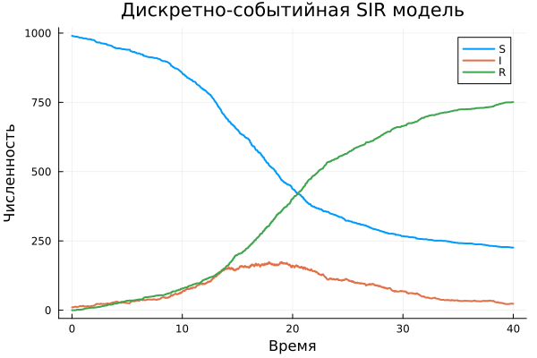
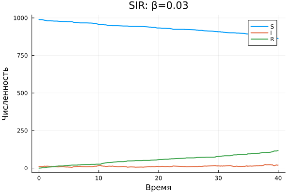
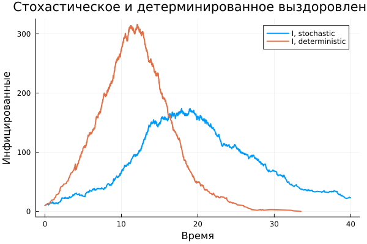
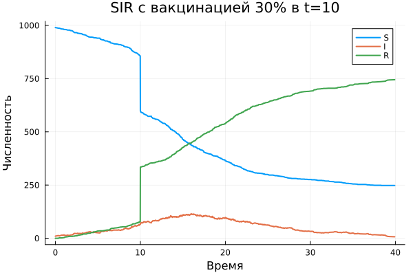
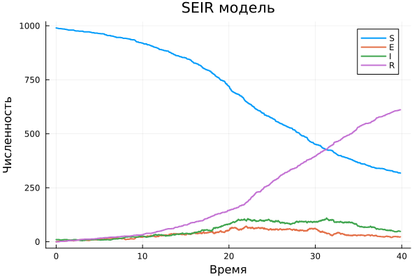

Лабораторная работа 8
Дискретно-событийная SIR модель
true
today
Информация
Докладчик
- ФИО СТУДЕНТА
- Группа: УКАЗАТЬ ГРУППУ
- Направление: 02.03.01 Математика и компьютерные науки
- Организация: РУДН имени Патриса Лумумбы
- Преподаватель: УКАЗАТЬ ФИО И ДОЛЖНОСТЬ

Вводная часть
Актуальность
- Дискретно-событийные модели позволяют описывать случайные события в виртуальном времени.
- Эпидемические модели удобны для анализа влияния параметров и сценариев вмешательства.
- Julia и
ConcurrentSim.jlпозволяют реализовать агентную модель в воспроизводимом виде.
Объект и предмет
- Объект исследования: распространение инфекции в смешивающейся популяции.
- Предмет исследования: дискретно-событийная реализация SIR и её модификации.
- Рассматриваются базовая SIR, параметрические прогоны, вакцинация, демография и SEIR.
Цель и задачи
- Цель: реализовать и исследовать дискретно-событийную SIR модель.
- Реализовать ядро модели и скрипты запуска.
- Провести анализ влияния
β,c,γ. - Сравнить стохастическое и детерминированное выздоровление.
- Подготовить отчёт, презентацию, notebook и Quarto-документацию.
Материалы и методы
- Язык: Julia.
- Моделирование:
ConcurrentSim.jl,ResumableFunctions.jl. - Данные и графики:
DataFrames.jl,CSV.jl,StatsPlots.jl. - Воспроизводимость:
DrWatson.jl,Literate.jl, Quarto.
Реализация
Структура модели
SIRPerson: идентификатор и статус агента.SIRModel: параметры, симулятор, временные ряды и список агентов.live: жизненный цикл агента с ожиданием контакта и выздоровления.out: экспорт временных рядов вDataFrame.
Алгоритм
- Создать популяцию с начальными состояниями
S,I,R. - Запустить процесс для каждого агента.
- Обрабатывать события заражения и выздоровления.
- Сохранять временные ряды в момент каждого события.
- Построить графики и сохранить CSV.
Результаты
Базовый эксперимент

Анализ параметров

Сравнение выздоровления

Вакцинация

SEIR

Заключение
Выводы
- Реализована дискретно-событийная SIR модель на Julia.
- Получены графики и CSV для базового и параметрических запусков.
- Показано влияние
β,c,γна пик и длительность эпидемии. - Добавлены модификации: фиксированное выздоровление, вакцинация, демография, SEIR.
- Подготовлен воспроизводимый комплект отчётности из Markdown/Quarto.